Overview
This tutorial shows you how to create additive animations in 3ds Max using a Biped, and how you can make the most out of additive animations.
Before proceeding, please have a look at the documentation on Additive Animations.
Sample Assets
Please download the sample 3ds Max 2010 assets required for this tutorial:
Creating Assets in 3ds Max
This is an intermediate tutorial which assumes that users understand the basics of 3ds Max such as the user interface and the creation of characters, using Bipeds and are familiar with the Character Tool.
This tutorial focuses only on the aspect of creating and previewing additive animations.
For this tutorial, we are going to create an additive animation where a character bends for cover from incoming gunfire while running.
Now, formerly, you would have had to create an actual run animation where the character takes cover. However, with additive animations, you can use an already existing run animation and add a taking cover animation to it.
Open the SDK_character_male.max and load the bip file relaxed_run_nw_forward_fast_01 in Mixer.
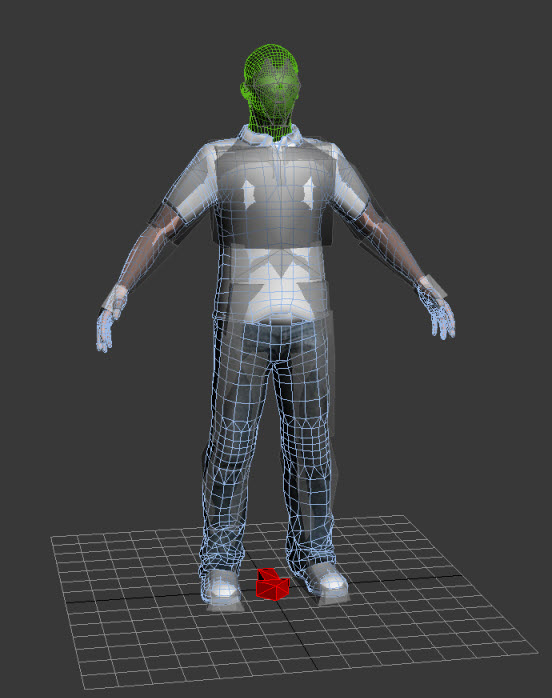
Please make a 4 time loop of the run animation, compute mix-down, and load it into the scene.
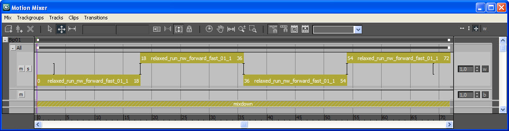
We are going to use this looping animation as our base for creating the additive animation.
Now, add a layer for the Biped and start placing keys to create your additive animation.
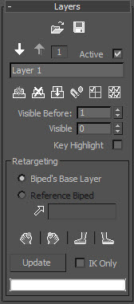
Take a look at the sample file additive_layer_animation.max to get an idea.
The poses for the arm, when the character takes cover to stop the animation, are shown below:
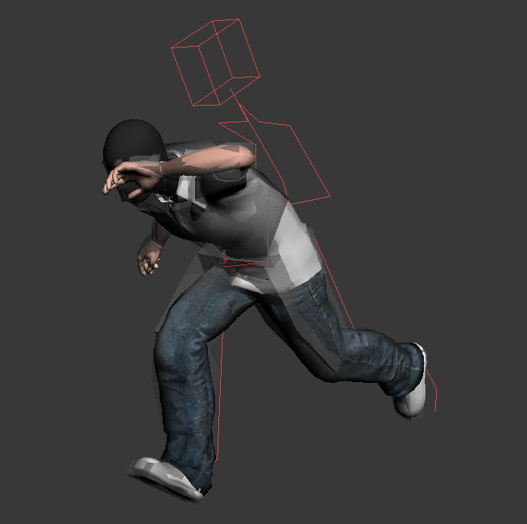
Once done, make sure that towards the end of the animation, the character returns back to his original animation.
One of the method in Max is to Disable Layer 1:
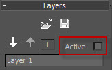
Copy Pose:
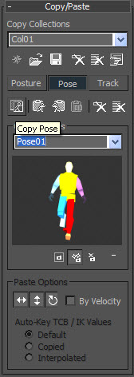
and enable Layer 1 back and paste the pose so it matches the animation on Layer 0. For this tutorial, the pose was pasted on keyframe 68.
Give a good amount of frames for the character to return back to the original animation. Otherwise, you will see him snap back. Fortunately, with this technique you can actually preview your additive animation in Max before you export it.
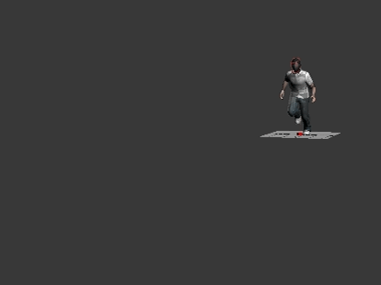
Once you are pleased with your animation, you are ready to export it.
Exporting the Animation
Now, we are going to export two animations:
- The additive that makes the character bend while running.
- The arm animation as a UpperBody animation that replaces the existing left arm animation. Because it is additive, it cannot terminate the existing animation and you only need the left arm to stay in place. By doing so, you also see in this tutorial how you can load multiple animations on different layers in CryENGINE 3.
First select just the Bip01 L Clavicle in Bone Export and export the entire arm animation (the name arms_coverFire_01.caf is used here).
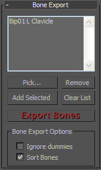
Now, you are ready to export the additive animation.
Select the entire Biped rig, go to layer 0, and delete all the keys except the one on Frame 0.
You only needed the run animation earlier as the base to create the additive animation. Now, since you are done, you don't need it and can delete it below.
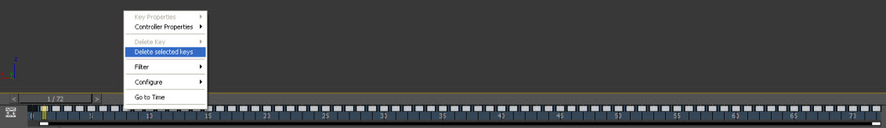
Go back to Layer 1 and Collapse the layer.
The end result that you get is your additive animation. Please also make sure to delete the keys on the locator.
Select Bip01 in Bone Export panel and export the animation to the additive folder (the name additive_walk_forward_fast_CF_01.caf is used here).
Make sure you have the correct settings in the Animations.cba file.
<!-- This tells the RC to flag Assets exported to this folder as additive assets and process them differently -->
<Animation APath="additive" Additive_Animation="1" SkipSaveToDatabase="0" RotEpsilon="0.0000001" PosEpsilon="0.01" compression="2" />Make sure you have the correct settings in the .animsettings file of your animation.
<AnimationSettings>
<AdditiveAnimation value="1"/>
</AnimationSettings>Testing Additives in the Character Editor
Open the Character Editor and load the sdk_character_male.cdf (if it does not load on default).
Check that your new animations shows up on the left side of the Character Editor. If you test the additive animation, don't be scared about any deforming that you see. As it is an additive animation, you are not supposed to play it on the Primary layer.
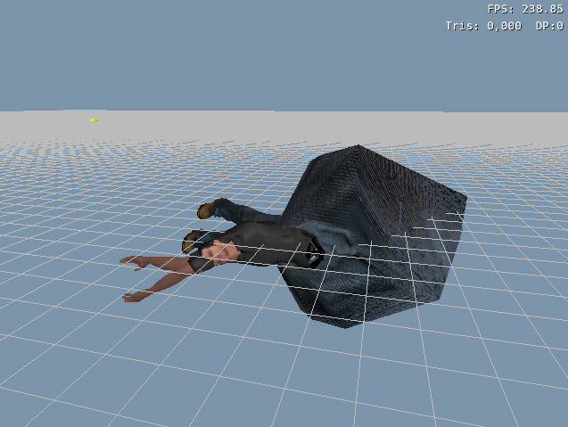
Make sure the Layer is set to Primary, Animation Driven is on, and all the IKs are off.

Click on the relaxed_run_forward_fast animation in the Animation panel on the left.
Now, change the Layer to Secondary .1:
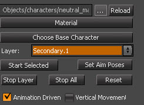
Click the additive animation additive_walk_forward_fast_CF_01 in the Animation panel on the left.
Notice how the additive animation is basically added on to the existing run animation. The character cowers while running.
Change the Layer now to Secondary .2 and click on the arms_coverFire_01 in the Animation panel on the left.
You can now see how you get a new cower animation by using additives and upperbody animation. And the end result is what you were previewing in Max already.
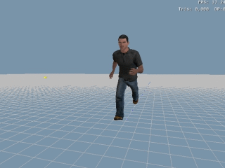
Keep a check on your mesh's deformation when creating additive animations.
You can actually adjust the weights of the Additive Animation. If you go back to Layer Secondary .1, you can set the Additive Anim Weights. 1 is the default value.
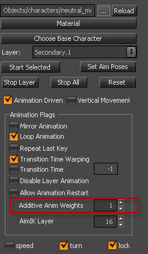